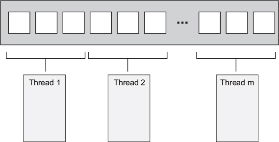
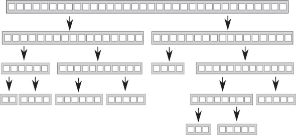
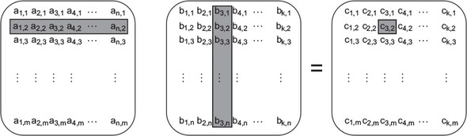
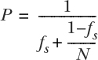

Most of the preceding chapters have focused on the tools you have in your C++ toolbox for writing concurrent code. In chapters 6 and 7 we looked at how to use those tools to design basic data structures that are safe for concurrent access by multiple threads. Much as a carpenter needs to know more than how to build a hinge or a joint in order to make a cupboard or a table, there’s more to designing concurrent code than the design and use of basic data structures. You now need to look at the wider context so you can build bigger structures that perform useful work. I’ll be using multithreaded implementations of some of the C++ Standard Library algorithms as examples, but the same principles apply at all scales of an application.
Just as with any programming project, it’s vital to think carefully about the design of concurrent code. But with multithreaded code, there are even more factors to consider than with sequential code. Not only must you think about the usual factors, such as encapsulation, coupling, and cohesion (which are amply described in the many books on software design), but you also need to consider which data to share, how to synchronize accesses to that data, which threads need to wait for which other threads to complete certain operations, and so on.
In this chapter we’ll be focusing on these issues, from the high-level (but fundamental) considerations of how many threads to use, which code to execute on which thread, and how this can affect the clarity of the code, to the low-level details of how to structure the shared data for optimal performance.
Let’s start by looking at techniques for dividing work between threads.
Imagine for a moment that you’ve been tasked with building a house. In order to complete the job, you’ll need to dig the foundation, build walls, put in plumbing, add the wiring, and so on. Theoretically, you could do it all yourself with sufficient training, but it would probably take a long time, and you’d be continually switching tasks as necessary. Alternatively, you could hire a few other people to help out. You now have to choose how many people to hire and decide what skills they need. You could, for example, hire a couple of people with general skills and have everybody chip in with everything. You’d still all switch tasks as necessary, but now things can be done more quickly because there are more of you.
Alternatively, you could hire a team of specialists: a bricklayer, a carpenter, an electrician, and a plumber, for example. Your specialists do whatever their specialty is, so if there’s no plumbing needed, your plumber sits around drinking tea or coffee. Things still get done more quickly than before, because there are more of you, and the plumber can put the toilet in while the electrician wires up the kitchen, but there’s more waiting around when there’s no work for a particular specialist. Even with the idle time, you might find that the work is done faster with specialists than with a team of general handymen. Your specialists don’t need to keep changing tools, and they can probably each do their tasks quicker than the generalists can. Whether or not this is the case depends on the particular circumstances—you’d have to try it and see.
Even if you hire specialists, you can still choose to hire different numbers of each. It might make sense to have more bricklayers than electricians, for example. Also, the makeup of your team and the overall efficiency might change if you had to build more than one house. Even though your plumber might not have lots of work to do on any given house, you might have enough work to keep him busy all the time if you’re building many houses at once. Also, if you don’t have to pay your specialists when there’s no work for them to do, you might be able to afford a larger team overall even if you have only the same number of people working at any one time.
OK, enough about building; what does all this have to do with threads? Well, with threads the same issues apply. You need to decide how many threads to use and what tasks they should be doing. You need to decide whether to have “generalist” threads that do whatever work is necessary at any point in time or “specialist” threads that do one thing well, or some combination. You need to make these choices whatever the driving reason for using concurrency, and how you do this will have a critical effect on the performance and clarity of the code. It’s therefore vital to understand the options so you can make an appropriately informed decision when designing the structure of your application. In this section, we’ll look at several techniques for dividing the tasks, starting with dividing data between threads before we do any other work.
The easiest algorithms to parallelize are simple algorithms, such as std::for_each, that perform an operation on each element in a data set. In order to parallelize this algorithm, you can assign each element to one of the processing threads. How the elements are best divided for optimal performance depends on the details of the data structure, as you’ll see later in this chapter when we look at performance issues.
The simplest means of dividing the data is to allocate the first N elements to one thread, the next N elements to another thread, and so on, as shown in figure 8.1, but other patterns could be used too. No matter how the data is divided, each thread then processes the elements it has been assigned without any communication with the other threads until it has completed its processing.

This structure will be familiar to anyone who has programmed using the Message Passing Interface (MPI, http://www.mpi-forum.org/) or OpenMP (http://www.openmp.org/) frameworks: a task is split into a set of parallel tasks, the worker threads run these tasks independently, and the results are combined in a final reduction step. It’s the approach used by the accumulate example from section 2.4; in this case, both the parallel tasks and the final reduction step are accumulations. For a simple for_each, the final step is a no-op because there are no results to reduce.
Identifying this final step as a reduction is important; a naive implementation such as listing 2.9 will perform this reduction as a final serial step. But this step can often be parallelized as well; accumulate is a reduction operation, so listing 2.9 could be modified to call itself recursively where the number of threads is larger than the minimum number of items to process on a thread, for example. Alternatively, the worker threads could be made to perform some of the reduction steps as each one completes its task, rather than spawning new threads each time.
Although this technique is powerful, it can’t be applied to everything. Sometimes the data can’t be divided neatly up front because the necessary divisions become apparent only as the data is processed. This is particularly apparent with recursive algorithms such as Quicksort; they therefore need a different approach.
The Quicksort algorithm has two basic steps: partition the data into items that come before or after one of the elements (the pivot) in the final sort order and recursively sort those two “halves.” You can’t parallelize this by dividing the data up front, because it’s only by processing the items that you know which “half” they go in. If you’re going to parallelize this algorithm, you need to make use of the recursive nature. With each level of recursion there are more calls to the quick_sort function, because you have to sort both the elements that belong before the pivot and those that belong after it. These recursive calls are entirely independent, because they access separate sets of elements, and so are prime candidates for concurrent execution. Figure 8.2 shows this recursive division.

In chapter 4, you saw this implementation. Rather than performing two recursive calls for the higher and lower chunks, you used std::async() to spawn asynchronous tasks for the lower chunk at each stage. By using std::async(), you ask the C++ Thread Library to decide when to run the task on a new thread and when to run it synchronously.
This is important: if you’re sorting a large set of data, spawning a new thread for each recursion would quickly result in a lot of threads. As you’ll see when we look at performance, if you have too many threads, you might slow down the application. There’s also a possibility of running out of threads if the data set is large. The idea of dividing the overall task in a recursive fashion like this is a good one; you just need to keep a tighter rein on the number of threads. std::async() can handle this in simple cases, but it’s not the only choice.
One alternative is to use the std::thread::hardware_concurrency() function to choose the number of threads, as you did with the parallel version of accumulate() from listing 2.9. Then, rather than starting a new thread for the recursive calls, you can push the chunk to be sorted onto a thread-safe stack, such as one of those described in chapters 6 and 7. If a thread has nothing else to do, either because it has finished processing all its chunks or because it’s waiting for a chunk to be sorted, it can take a chunk from the stack and sort that.
The following listing shows a sample implementation that uses this technique. As with most of the examples, this is intended to demonstrate an idea rather than being production-ready code. If you’re using a C++17 compiler and your library supports it, you’re better off using the parallel algorithms provided by Standard Library, as covered in chapter 10.
template<typename T>
struct sorter 1
{
struct chunk_to_sort
{
std::list<T> data;
std::promise<std::list<T> > promise;
};
thread_safe_stack<chunk_to_sort> chunks; 2
std::vector<std::thread> threads; 3
unsigned const max_thread_count;
std::atomic<bool> end_of_data;
sorter():
max_thread_count(std::thread::hardware_concurrency()-1),
end_of_data(false)
{}
~sorter() 4
{
end_of_data=true; 5
for(unsigned i=0;i<threads.size();++i)
{
threads[i].join(); 6
}
}
void try_sort_chunk()
{
boost::shared_ptr<chunk_to_sort > chunk=chunks.pop(); 7
if(chunk)
{
sort_chunk(chunk); 8
}
}
std::list<T> do_sort(std::list<T>& chunk_data) 9
{
if(chunk_data.empty())
{
return chunk_data;
}
std::list<T> result;
result.splice(result.begin(),chunk_data,chunk_data.begin());
T const& partition_val=*result.begin();
typename std::list<T>::iterator divide_point= 10
std::partition(chunk_data.begin(),chunk_data.end(),
[&](T const& val){return val<partition_val;});
chunk_to_sort new_lower_chunk;
new_lower_chunk.data.splice(new_lower_chunk.data.end(),
chunk_data,chunk_data.begin(),
divide_point);
std::future<std::list<T> > new_lower=
new_lower_chunk.promise.get_future();
chunks.push(std::move(new_lower_chunk)); 11
if(threads.size()<max_thread_count) 12
{
threads.push_back(std::thread(&sorter<T>::sort_thread,this));
}
std::list<T> new_higher(do_sort(chunk_data));
result.splice(result.end(),new_higher);
while(new_lower.wait_for(std::chrono::seconds(0)) !=
std::future_status::ready) 13
{
try_sort_chunk(); 14
}
result.splice(result.begin(),new_lower.get());
return result;
}
void sort_chunk(boost::shared_ptr<chunk_to_sort > const& chunk)
{
chunk->promise.set_value(do_sort(chunk->data)); 15
}
void sort_thread()
{
while(!end_of_data) 16
{
try_sort_chunk(); 17
std::this_thread::yield(); 18
}
}
};
template<typename T>
std::list<T> parallel_quick_sort(std::list<T> input) 19
{
if(input.empty())
{
return input;
}
sorter<T> s;
return s.do_sort(input); 20
}
Here, the parallel_quick_sort function 19 delegates most of the functionality to the sorter class 1, which provides an easy way of grouping the stack of unsorted chunks 2 and the set of threads 3. The main work is done in the do_sort member function 9, which does the usual partitioning of the data 10. This time, rather than spawning a new thread for one chunk, it pushes it onto the stack 11 and spawns a new thread while you still have processors to spare 12. Because the lower chunk might be handled by another thread, you then have to wait for it to be ready 13. In order to help things along (in case you’re the only thread or all the others are already busy), you try to process chunks from the stack on this thread while you’re waiting 14. try_sort_chunk pops a chunk off the stack 7, and sorts it 8, storing the result in the promise, ready to be picked up by the thread that posted the chunk on the stack 15.
Your freshly spawned threads sit in a loop trying to sort chunks off the stack 17, while the end_of_data flag isn’t set 16. In between checking, they yield to other threads 18 to give them a chance to put some more work on the stack. This code relies on the destructor of your sorter class 4 to tidy up these threads. When all the data has been sorted, do_sort will return (even though the worker threads are still running), so your main thread will return from parallel_quick_sort 20 and destroy your sorter object. This sets the end_of_data flag 5 and waits for the threads to finish 6. Setting the flag terminates the loop in the thread function 16.
With this approach you no longer have the problem of unbounded threads that you have with a spawn_task that launches a new thread, and you’re no longer relying on the C++ Thread Library to choose the number of threads for you, as it does with std::async(). Instead, you limit the number of threads to the value of std:: thread::hardware_concurrency() in order to avoid excessive task switching. You do, however, have another potential problem: the management of these threads and the communication between them add quite a lot of complexity to the code. Also, although the threads are processing separate data elements, they all access the stack to add new chunks and to remove chunks for processing. This heavy contention can reduce performance, even if you use a lock-free (and hence nonblocking) stack, for reasons you’ll see shortly.
This approach is a specialized version of a thread pool—that’s a set of threads that each take work to do from a list of pending work, do the work, and then go back to the list for more. Some of the potential problems with thread pools (including the contention on the work list) and ways of addressing them are covered in chapter 9. The problems of scaling your application to multiple processors are discussed in more detail later in this chapter (see section 8.2.1).
Both dividing the data before processing begins and dividing it recursively presume that the data itself is fixed beforehand, and you’re looking at ways of dividing it. This isn’t always the case; if the data is dynamically generated or is coming from external input, this approach doesn’t work. In this case, it might make more sense to divide the work by task type rather than dividing based on the data.
Dividing work between threads by allocating different chunks of data to each thread (whether up front or recursively during processing) still rests on the assumption that the threads are going to be doing the same work on each chunk of data. An alternative to dividing the work is to make the threads specialists, where each performs a distinct task, just as plumbers and electricians perform distinct tasks when building a house. Threads may or may not work on the same data, but if they do, it’s for different purposes.
This is the sort of division of work that results from separating concerns with concurrency; each thread has a different task, which it carries out independently of other threads. Occasionally other threads may give it data or trigger events that it needs to handle, but in general each thread focuses on doing one thing well. In itself, this is basic good design; each piece of code should have a single responsibility.
A single-threaded application has to handle conflicts with the single responsibility principle where there are multiple tasks that need to be run continuously over a period of time, or where the application needs to be able to handle incoming events (such as user key presses or incoming network data) in a timely fashion, even while other tasks are ongoing. In the single-threaded world you end up manually writing code that performs a bit of task A, a bit of task B, checks for key presses, checks for incoming network packets, and then loops back to perform another bit of task A. This means that the code for task A ends up being complicated by the need to save its state and return control to the main loop periodically. If you add too many tasks to the loop, things might slow down too much, and the user may find it takes too long to respond to the key press. I’m sure you’ve all seen the extreme form of this in action with some application or other: you set it to doing some task, and the interface freezes until it has completed the task.
This is where threads come in. If you run each of the tasks in a separate thread, the operating system handles this for you. In the code for task A, you can focus on performing the task and not worry about saving state and returning to the main loop or how long you spend before doing so. The operating system will automatically save the state and switch to task B or C when appropriate, and if the target system has multiple cores or processors, tasks A and B may be able to run concurrently. The code for handling the key press or network packet will now be run in a timely fashion, and everybody wins: the user gets timely responses, and you, as the developer, have simpler code because each thread can focus on doing operations related directly to its responsibilities, rather than getting mixed up with control flow and user interaction.
That sounds like a nice, rosy vision. Can it be like that? As with everything, it depends on the details. If everything is independent, and the threads have no need to communicate with each other, then it can be this easy. Unfortunately, the world is rarely like that. These nice background tasks are often doing something that the user requested, and they need to let the user know when they’re done by updating the user interface in some manner. Alternatively, the user might want to cancel the task, which therefore requires the user interface to somehow send a message to the background task telling it to stop. Both these cases require careful thought and design and suitable synchronization, but the concerns are still separate. The user interface thread still handles the user interface, but it might have to update it when asked to do so by other threads. Likewise, the thread running the background task still focuses on the operations required for that task; it just happens that one of them is “allow task to be stopped by another thread.” In neither case do the threads care where the request came from, only that it was intended for them and relates directly to their responsibilities.
There are two big dangers with separating concerns with multiple threads. The first is that you’ll end up separating the wrong concerns. The symptoms to check for are that there is a lot of data shared between the threads or the different threads end up waiting for each other; both cases boil down to too much communication between threads. If this happens, it’s worth looking at the reasons for the communication. If all the communication relates to the same issue, maybe that should be the key responsibility of a single thread and extracted from all the threads that refer to it. Alternatively, if two threads are communicating a lot with each other but much less with other threads, maybe they should be combined into a single thread.
When dividing work across threads by task type, you don’t have to limit yourself to completely isolated cases. If multiple sets of input data require the same sequence of operations to be applied, you can divide the work so each thread performs one stage from the overall sequence.
If your task consists of applying the same sequence of operations to many independent data items, you can use a pipeline to exploit the available concurrency of your system. This is by analogy to a physical pipeline: data flows in at one end through a series of operations (pipes) and out at the other end.
To divide the work this way, you create a separate thread for each stage in the pipeline—one thread for each of the operations in the sequence. When the operation is completed, the data element is put in a queue to be picked up by the next thread. This allows the thread performing the first operation in the sequence to start on the next data element while the second thread in the pipeline is working on the first element.
This is an alternative to dividing the data between threads, as described in section 8.1.1, and is appropriate in circumstances where the input data itself isn’t all known when the operation is started. For example, the data might be coming in over a network, or the first operation in the sequence might be to scan a filesystem in order to identify files to process.
Pipelines are also good when each operation in the sequence is time-consuming; by dividing the tasks between threads rather than the data, you change the performance profile. Suppose you have 20 data items to process on 4 cores, and each data item requires 4 steps, which take 3 seconds each. If you divide the data between four threads, then each thread has five items to process. Assuming there’s no other processing that might affect the timings, after 12 seconds you’ll have 4 items processed, after 24 seconds 8 items processed, and so on. All 20 items will be done after 1 minute. With a pipeline, things work differently. Each of your four steps can be assigned to a processing core. Now the first item has to be processed by each core, so it still takes the full 12 seconds. Indeed, after 12 seconds you only have 1 item processed, which isn’t as good as with the division by data. But once the pipeline is primed, things proceed a bit differently; after the first core has processed the first item, it moves on to the second, so once the final core has processed the first item, it can perform its step on the second. You now get 1 item processed every 3 seconds rather than having the items processed in batches of 4 every 12 seconds.
The overall time to process the entire batch takes longer because you have to wait nine seconds before the final core starts processing the first item. But smoother, more regular processing can be beneficial in some circumstances. Consider, for example, a system for watching high-definition digital videos. In order for the video to be watchable, you typically need at least 25 frames per second and ideally more. Also, the viewer needs these to be evenly spaced to give the impression of continuous movement; an application that can decode 100 frames per second is still of no use if it pauses for a second, then displays 100 frames, then pauses for another second, and displays another 100 frames. On the other hand, viewers are probably happy to accept a delay of a couple of seconds when they start watching a video. In this case, parallelizing using a pipeline that outputs frames at a nice steady rate is probably preferable.
Having looked at various techniques for dividing the work between threads, let’s take a look at the factors affecting the performance of a multithreaded system and how that can impact your choice of techniques.
If you’re using concurrency to improve the performance of your code on systems with multiple processors, you need to know what factors are going to affect the performance. Even if you’re using multiple threads to separate concerns, you need to ensure that this doesn’t adversely affect the performance. Customers won’t thank you if your application runs more slowly on their shiny new 16-core machine than it did on their old single-core one.
As you’ll see shortly, many factors affect the performance of multithreaded code—even something as simple as changing which data elements are processed by each thread (while keeping everything else identical) can have a dramatic effect on performance. Without further ado, let’s look at some of these factors, starting with the obvious one: how many processors does your target system have?
The number (and structure) of processors is the first big factor that affects the performance of a multithreaded application, and it’s a crucial one. In some cases you know exactly what the target hardware is and can design with this in mind, taking real measurements on the target system or an exact duplicate. If so, you’re one of the lucky ones; in general, you don’t have that luxury. You might be developing on a similar system, but the differences can be crucial. For example, you might be developing on a dual- or quad-core system, but your customers’ systems may have one multicore processor (with any number of cores), or multiple single-core processors, or even multiple multicore processors. The behavior and performance characteristics of a concurrent program can vary considerably under these different circumstances, so you need to think carefully about what the impact may be and test things where possible.
To a first approximation, a single 16-core processor is the same as 4 quad-core processors or 16 single-core processors: in each case the system can run 16 threads concurrently. If you want to take advantage of this, your application must have at least 16 threads. If it has fewer than 16, you’re leaving processor power on the table (unless the system is running other applications too, but we’ll ignore that possibility for now). On the other hand, if you have more than 16 threads ready to run (and not blocked, waiting for something), your application will waste processor time switching between the threads, as discussed in chapter 1. When this happens, the situation is called oversubscription.
To allow applications to scale the number of threads in line with the number of threads the hardware can run concurrently, the C++11 Standard Thread Library provides std::thread::hardware_concurrency(). You’ve already seen how that can be used to scale the number of threads to the hardware.
Using std::thread::hardware_concurrency() directly requires care; your code doesn’t take into account any of the other threads that are running on the system unless you explicitly share that information. In the worst-case scenario, if multiple threads call a function that uses std::thread::hardware_concurrency() for scaling at the same time, there will be huge oversubscription. std::async() avoids this problem because the library is aware of all calls and can schedule appropriately. Careful use of thread pools can also avoid this problem.
But even if you take into account all threads running in your application, you’re still subject to the impact of other applications running at the same time. Although the use of multiple CPU-intensive applications simultaneously is rare on single-user systems, there are some domains where it’s more common. Systems designed to handle this scenario typically offer mechanisms to allow each application to choose an appropriate number of threads, although these mechanisms are outside the scope of the C++ Standard. One option is for a facility like std::async() to take into account the total number of asynchronous tasks run by all applications when choosing the number of threads. Another is to limit the number of processing cores that can be used by a given application. I’d expect this limit to be reflected in the value returned by std::thread::hardware_concurrency() on these platforms, although this isn’t guaranteed. If you need to handle this scenario, consult your system documentation to see what options are available to you.
One additional twist to this situation is that the ideal algorithm for a problem can depend on the size of the problem compared to the number of processing units. If you have a massively parallel system with many processing units, an algorithm that performs more operations overall may finish more quickly than one that performs fewer operations, because each processor performs only a few operations.
As the number of processors increases, so does the likelihood and performance impact of another problem: that of multiple processors trying to access the same data.
If two threads are executing concurrently on different processors and they’re both reading the same data, this usually won’t cause a problem; the data will be copied into their respective caches, and both processors can proceed. But if one of the threads modifies the data, this change then has to propagate to the cache on the other core, which takes time. Depending on the nature of the operations on the two threads, and the memory orderings used for the operations, this modification may cause the second processor to stop in its tracks and wait for the change to propagate through the memory hardware. In terms of CPU instructions, this can be a phenomenally slow operation, equivalent to many hundreds of individual instructions, although the exact timing depends primarily on the physical structure of the hardware.
Consider the following simple piece of code:
std::atomic<unsigned long> counter(0);
void processing_loop()
{
while(counter.fetch_add(1,std::memory_order_relaxed)<100000000)
{
do_something();
}
}
The counter is global, so any threads that call processing_loop() are modifying the same variable. Therefore, for each increment the processor must ensure it has an up-to-date copy of counter in its cache, modify the value, and publish it to other processors. Even though you’re using std::memory_order_relaxed, so the compiler doesn’t have to synchronize any other data, fetch_add is a read-modify-write operation and therefore needs to retrieve the most recent value of the variable. If another thread on another processor is running the same code, the data for counter must therefore be passed back and forth between the two processors and their corresponding caches so that each processor has the latest value for counter when it does the increment. If do_something() is short enough, or if there are too many processors running this code, the processors might find themselves waiting for each other; one processor is ready to update the value, but another processor is currently doing that, so it has to wait until the second processor has completed its update and the change has propagated. This situation is called high contention. If the processors rarely have to wait for each other, you have low contention.
In a loop like this one, the data for counter will be passed back and forth between the caches many times. This is called cache ping-pong, and it can seriously impact the performance of the application. If a processor stalls because it has to wait for a cache transfer, it can’t do any work in the meantime, even if there are other threads waiting that could do useful work, so this is bad news for the whole application.
You might think that this won’t happen to you; after all, you don’t have any loops like that. Are you sure? What about mutex locks? If you acquire a mutex in a loop, your code is similar to the previous code from the point of view of data accesses. In order to lock the mutex, another thread must transfer the data that makes up the mutex to its processor and modify it. When it’s done, it modifies the mutex again to unlock it, and the mutex data has to be transferred to the next thread to acquire the mutex. This transfer time is in addition to any time that the second thread has to wait for the first to release the mutex:
std::mutex m;
my_data data;
void processing_loop_with_mutex()
{
while(true)
{
std::lock_guard<std::mutex> lk(m);
if(done_processing(data)) break;
}
}
Now, here’s the worst part: if the data and mutex are accessed by more than one thread, then as you add more cores and processors to the system, it becomes more likely that you will get high contention and one processor having to wait for another. If you’re using multiple threads to process the same data more quickly, the threads are competing for the data and thus competing for the same mutex. The more of them there are, the more likely they’ll try to acquire the mutex at the same time, or access the atomic variable at the same time, and so forth.
The effects of contention with mutexes are usually different from the effects of contention with atomic operations for the simple reason that the use of a mutex naturally serializes threads at the operating system level rather than at the processor level. If you have enough threads ready to run, the operating system can schedule another thread to run while one thread is waiting for the mutex, whereas a processor stall prevents any threads from running on that processor. But it will still impact the performance of those threads that are competing for the mutex; they can only run one at a time, after all.
Back in chapter 3, you saw how a rarely updated data structure can be protected with a single-writer, multiple-reader mutex (see section 3.3.2). Cache ping-pong effects can nullify the benefits of this mutex if the workload is unfavorable, because all threads accessing the data (even reader threads) still have to modify the mutex itself. As the number of processors accessing the data goes up, the contention on the mutex itself increases, and the cache line holding the mutex must be transferred between cores, potentially increasing the time taken to acquire and release locks to undesirable levels. There are techniques to ameliorate this problem by spreading out the mutex across multiple cache lines, but unless you implement your own mutex, you are subject to whatever your system provides.
If this cache ping-pong is bad, how can you avoid it? As you’ll see later in the chapter, the answer ties in nicely with general guidelines for improving the potential for concurrency: do what you can to reduce the potential for two threads competing for the same memory location.
It’s not quite that simple, though; things never are. Even if a particular memory location is only ever accessed by one thread, you can still get cache ping-pong due to an effect known as false sharing.
Processor caches don’t generally deal in individual memory locations; instead, they deal in blocks of memory called cache lines. These blocks of memory are typically 32 or 64 bytes in size, but the exact details depend on the particular processor model being used. Because the cache hardware only deals in cache-line-sized blocks of memory, small data items in adjacent memory locations will be in the same cache line. Sometimes this is good: if a set of data accessed by a thread is in the same cache line, this is better for the performance of the application than if the same set of data was spread over multiple cache lines. But if the data items in a cache line are unrelated and need to be accessed by different threads, this can be a major cause of performance problems.
Suppose you have an array of int values and a set of threads that each access their own entry in the array but do so repeatedly, including updates. Because an int is typically much smaller than a cache line, quite a few of those array entries will be in the same cache line. Consequently, even though each thread only accesses its own array entry, the cache hardware still has to play cache ping-pong. Every time the thread accessing entry 0 needs to update the value, ownership of the cache line needs to be transferred to the processor running that thread, only to be transferred to the cache for the processor running the thread for entry 1 when that thread needs to update its data item. The cache line is shared, even though none of the data is, hence the term false sharing. The solution here is to structure the data so that data items to be accessed by the same thread are close together in memory (and thus more likely to be in the same cache line), whereas those that are to be accessed by separate threads are far apart in memory and thus more likely to be in separate cache lines. You’ll see how this affects the design of the code and data later in this chapter. The C++17 standard defines std::hardware_destructive_interference_size in the header <new>, which specifies the maximum number of consecutive bytes that may be subject to false sharing for the current compilation target. If you ensure that your data is at least this number of bytes apart, then there will be no false sharing.
If having multiple threads access data from the same cache line is bad, how does the memory layout of data accessed by a single thread affect things?
Although false sharing is caused by having data accessed by one thread too close to data accessed by another thread, another pitfall associated with data layout directly impacts the performance of a single thread on its own. The issue is data proximity: if the data accessed by a single thread is spread out in memory, it’s likely that it lies on separate cache lines. On the flip side, if the data accessed by a single thread is close together in memory, it’s more likely to lie on the same cache line. Consequently, if data is spread out, more cache lines must be loaded from memory onto the processor cache, which can increase memory access latency and reduce performance compared to data that’s located close together.
Also, if the data is spread out, there’s an increased chance that a given cache line containing data for the current thread also contains data that’s not for the current thread. At the extreme, there’ll be more data in the cache that you don’t care about than data that you do. This wastes precious cache space and increases the chance that the processor will experience a cache miss and have to fetch a data item from main memory even if it once held it in the cache, because it had to remove the item from the cache to make room for another.
Now, this is important with single-threaded code, so why am I bringing it up here? The reason is task switching. If there are more threads than cores in the system, each core is going to be running multiple threads. This increases the pressure on the cache, as you try to ensure that different threads are accessing different cache lines in order to avoid false sharing. Consequently, when the processor switches threads, it’s more likely to have to reload the cache lines if each thread uses data spread across multiple cache lines than if each thread’s data is close together in the same cache line. The C++17 standard specifies the constant std::hardware_constructive_interference_size, also in the header <new>, which is the maximum number of consecutive bytes guaranteed to be on the same cache line (if suitably aligned). If you can fit data that is needed together within this number of bytes, it will potentially reduce the number of cache misses.
If there are more threads than cores or processors, the operating system might also choose to schedule a thread on one core for one time slice and then on another core for the next time slice. This will therefore require transferring the cache lines for that thread’s data from the cache for the first core to the cache for the second; the more cache lines that need transferring, the more time-consuming this will be. Although operating systems typically avoid this when they can, it does happen and does impact performance.
Task-switching problems are particularly prevalent when lots of threads are ready to run as opposed to waiting. This is an issue we’ve already touched on: oversubscription.
In multithreaded systems, it’s typical to have more threads than processors, unless you’re running on massively parallel hardware. But threads often spend time waiting for external I/O to complete, blocked on mutexes, waiting for condition variables, and so forth, so this isn’t a problem. Having the extra threads enables the application to perform useful work rather than having processors sitting idle while the threads wait.
This isn’t always a good thing. If you have too many additional threads, there will be more threads ready to run than there are available processors, and the operating system will have to start task switching quite heavily in order to ensure they all get a fair time slice. As you saw in chapter 1, this can increase the overhead of the task switching as well as compound any cache problems resulting from lack of proximity. Oversubscription can arise when you have a task that repeatedly spawns new threads without limits, as the recursive quick sort from chapter 4 did, or where the natural number of threads when you separate by task type is more than the number of processors and the work is naturally CPU-bound rather than I/O-bound.
If you’re spawning too many threads because of data division, you can limit the number of worker threads, as you saw in section 8.1.2. If the oversubscription is due to the natural division of work, there’s not a lot you can do to ameliorate the problem save choosing a different division. In that case, choosing the appropriate division may require more knowledge of the target platform than you have available and is only worth doing if performance is unacceptable and it can be demonstrated that changing the division of work does improve performance.
Other factors can affect the performance of multithreaded code. The cost of cache ping-pong can vary quite considerably between two single-core processors and a single dual-core processor, even if they’re the same CPU type and clock speed, for example, but these are the major ones that will have a visible impact. Let’s now look at how that affects the design of the code and data structures.
In section 8.1 we looked at various ways of dividing work between threads, and in section 8.2 we looked at various factors that can affect the performance of your code. How can you use this information when designing data structures for multithreaded performance? This is a different question than that addressed in chapters 6 and 7, which were about designing data structures that are safe for concurrent access. As you’ve seen in section 8.2, the layout of the data used by a single thread can have an impact, even if that data isn’t shared with any other threads.
The key things to bear in mind when designing your data structures for multithreaded performance are contention, false sharing, and data proximity. All three of these can have a big impact on performance, and you can often improve things by altering the data layout or changing which data elements are assigned to which thread. First off, let’s look at an easy win: dividing array elements between threads.
Suppose you’re doing some heavy-duty math, and you need to multiply two large square matrices together. To multiply matrices, you multiply each element in the first row of the first matrix with the corresponding element of the first column of the second matrix and add up the products to give the top-left element of the result. You then repeat this with the second row and the first column to give the second element in the first column of the result, and with the first row and second column to give the first element in the second column of the result, and so forth. This is shown in figure 8.3; the highlighting shows that the second row of the first matrix is paired with the third column of the second matrix to give the entry in the second row of the third column of the result.

Now let’s assume that these are large matrices with several thousand rows and columns, in order to make it worthwhile to use multiple threads to optimize the multiplication. Typically, a nonsparse matrix is represented by a big array in memory, with all the elements of the first row followed by all the elements of the second row, and so forth. To multiply your matrices you have three of these huge arrays. In order to get optimal performance, you need to pay careful attention to the data access patterns, particularly the writes to the third array.
There are many ways you can divide the work between threads. Assuming you have more rows/columns than available processors, you could have each thread calculate the values for a number of columns in the result matrix, or have each thread calculate the results for a number of rows, or even have each thread calculate the results for a rectangular subset of the matrix.
Back in sections 8.2.3 and 8.2.4, you saw that it’s better to access contiguous elements from an array rather than values all over the place, because this reduces cache usage and the chance of false sharing. If you have each thread compute a set of columns, it needs to read every value from the first matrix and the values from the corresponding columns in the second matrix, but you only have to write the column values. Given that the matrices are stored with the rows contiguous, this means that you’re accessing N elements from the first row, N elements from the second, and so forth (where N is the number of columns you’re processing). Because other threads will be accessing the other elements of each row, it’s clear that you ought to be accessing adjacent columns, so the N elements from each row are adjacent, and you minimize false sharing. If the space occupied by your N elements is an exact number of cache lines, there’ll be no false sharing because threads will be working on separate cache lines.
On the other hand, if you have each thread compute a set of rows, then it needs to read every value from the second matrix and the values from the corresponding rows of the first matrix, but it only has to write the row values. Because the matrices are stored with the rows contiguous, you’re now accessing all elements from N rows. If you again choose adjacent rows, this means that the thread is now the only thread writing to those N rows; it has a contiguous block of memory that’s not touched by any other thread. This is likely an improvement over having each thread compute a set of columns, because the only possibility of false sharing is for the last few elements of one block with the first few of the next, but it’s worth timing it on the target architecture to confirm.
What about your third option—dividing into rectangular blocks? This can be viewed as dividing into columns and then dividing into rows. As such, it has the same false-sharing potential as division by columns. If you can choose the number of columns in the block to avoid this possibility, there’s an advantage to rectangular division from the read side: you don’t need to read the entirety of either source matrix. You only need to read the values corresponding to the rows and columns of the target rectangle. To look at this in concrete terms, consider multiplying two matrices that have 1,000 rows and 1,000 columns. That’s 1 million elements. If you have 100 processors, they can compute 10 rows each for a nice round 10,000 elements. But to calculate the results of those 10,000 elements, they need to access the entirety of the second matrix (1 million elements) plus the 10,000 elements from the corresponding rows in the first matrix, for a grand total of 1,010,000 elements. On the other hand, if they each compute a block of 100 elements by 100 elements (which is still 10,000 elements total), they need to access the values from 100 rows of the first matrix (100 x 1,000 = 100,000 elements) and 100 columns of the second matrix (another 100,000). This is only 200,000 elements, which is a five-fold reduction in the number of elements read. If you’re reading fewer elements, there’s less chance of a cache miss and the potential for greater performance.
It may therefore be better to divide the result matrix into small, square or almost-square blocks rather than have each thread compute the entirety of a small number of rows. You can adjust the size of each block at runtime, depending on the size of the matrices and the available number of processors. As ever, if performance is important, it’s vital to profile various options on the target architecture, and check the literature relevant to the field—I make no claim that these are the only or best options if you are doing matrix multiplication
Chances are you’re not doing matrix multiplication, so how does this apply to you? The same principles apply to any situation where you have large blocks of data to divide between threads; look at all the aspects of the data access patterns carefully, and identify the potential causes of performance hits. There may be similar circumstances in your problem domain where changing the division of work can improve performance without requiring any change to the basic algorithm.
OK, so we’ve looked at how access patterns in arrays can affect performance. What about other types of data structures?
Fundamentally, the same considerations apply when trying to optimize the data access patterns of other data structures as when optimizing access to arrays:
That’s not easy to apply to other data structures. For example, binary trees are inherently difficult to subdivide in any unit other than a subtree, which may or may not be useful, depending on how balanced the tree is and how many sections you need to divide it into. Also, the nature of the trees means that the nodes are likely dynamically allocated and thus end up in different places on the heap.
Now, having data end up in different places on the heap isn’t a particular problem in itself, but it does mean that the processor has to keep more things in cache. This can be beneficial. If multiple threads need to traverse the tree, then they all need to access the tree nodes, but if the tree nodes only contain pointers to the real data held at the node, then the processor only has to load the data from memory if it’s needed. If the data is being modified by the threads that need it, this can avoid the performance hit of false sharing between the node data itself and the data that provides the tree structure.
There’s a similar issue with data protected by a mutex. Suppose you have a simple class that contains a few data items and a mutex used to protect accesses from multiple threads. If the mutex and the data items are close together in memory, this is ideal for a thread that acquires the mutex; the data it needs may already be in the processor cache, because it was loaded in order to modify the mutex. But there’s also a downside: if other threads try to lock the mutex while it’s held by the first thread, they’ll need access to that memory. Mutex locks are typically implemented as a read-modify-write atomic operation on a memory location within the mutex to try to acquire the mutex, followed by a call to the operating system kernel if the mutex is already locked. This read-modify-write operation may cause the data held in the cache by the thread that owns the mutex to be invalidated. As far as the mutex goes, this isn’t a problem; that thread isn’t going to touch the mutex until it unlocks it. But if the mutex shares a cache line with the data being used by the thread, the thread that owns the mutex can take a performance hit because another thread tried to lock the mutex!
One way to test whether this kind of false sharing is a problem is to add huge blocks of padding between the data elements that can be concurrently accessed by different threads. For example, you can use
struct protected_data
{
std::mutex m;
char padding[std::hardware_destructive_interference_size]; 1
my_data data_to_protect;
};
to test the mutex contention issue or
struct my_data
{
data_item1 d1;
data_item2 d2;
char padding[std::hardware_destructive_interference_size];
};
my_data some_array[256];
to test for false sharing of array data. If this improves the performance, you know that false sharing was a problem, and you can either leave the padding in or work to eliminate the false sharing in another way by rearranging the data accesses.
There’s more than the data access patterns to consider when designing for concurrency, so let’s look at some of these additional considerations.
So far in this chapter we’ve looked at ways of dividing work between threads, factors affecting performance, and how these factors affect your choice of data access patterns and data structures. There’s more to designing code for concurrency than that, though. You also need to consider things such as exception safety and scalability. Code is said to be scalable if the performance (whether in terms of reduced speed of execution or increased throughput) increases as more processing cores are added to the system. Ideally, the performance increase is linear, so a system with 100 processors performs 100 times better than a system with one processor.
Although code can work even if it isn’t scalable—a single-threaded application is certainly not scalable, for example—exception safety is a matter of correctness. If your code isn’t exception-safe, you can end up with broken invariants or race conditions, or your application might terminate unexpectedly because an operation threw an exception. With this in mind, we’ll look at exception safety first.
Exception safety is an essential aspect of good C++ code, and code that uses concurrency is no exception. In fact, parallel algorithms often require that you take more care with exceptions than normal sequential algorithms. If an operation in a sequential algorithm throws an exception, the algorithm only has to worry about ensuring that it tidies up after itself to avoid resource leaks and broken invariants; it can merrily allow the exception to propagate to the caller for them to handle. By contrast, in a parallel algorithm many of the operations will be running on separate threads. In this case, the exception can’t be allowed to propagate because it’s on the wrong call stack. If a function spawned on a new thread exits with an exception, the application is terminated.
As a concrete example, let’s revisit the parallel_accumulate function from listing 2.9, which is reproduced here.
template<typename Iterator,typename T>
struct accumulate_block
{
void operator()(Iterator first,Iterator last,T& result)
{
result=std::accumulate(first,last,result); 1
}
};
template<typename Iterator,typename T>
T parallel_accumulate(Iterator first,Iterator last,T init)
{
unsigned long const length=std::distance(first,last); 2
if(!length)
return init;
unsigned long const min_per_thread=25;
unsigned long const max_threads=
(length+min_per_thread-1)/min_per_thread;
unsigned long const hardware_threads=
std::thread::hardware_concurrency();
unsigned long const num_threads=
std::min(hardware_threads!=0?hardware_threads:2,max_threads);
unsigned long const block_size=length/num_threads;
std::vector<T> results(num_threads); 3
std::vector<std::thread> threads(num_threads-1); 4
Iterator block_start=first; 5
for(unsigned long i=0;i<(num_threads-1);++i)
{
Iterator block_end=block_start; 6
std::advance(block_end,block_size);
threads[i]=std::thread( 7
accumulate_block<Iterator,T>(),
block_start,block_end,std::ref(results[i]));
block_start=block_end; 8
}
accumulate_block<Iterator,T>()(
block_start,last,results[num_threads-1]); 9
std::for_each(threads.begin(),threads.end(),
std::mem_fn(&std::thread::join));
return std::accumulate(results.begin(),results.end(),init); 10
}
Now let’s go through and identify the places where an exception can be thrown: anywhere where you call a function you know can throw or you perform an operation on a user-defined type that may throw.
First up, you have the call to distance 2, which performs operations on the user-supplied iterator type. Because you haven’t yet done any work, and this is on the calling thread, it’s fine. Next up, you have the allocation of the results vector 3 and the threads vector 4. Again, these are on the calling thread, and you haven’t done any work or spawned any threads, so this is fine. If the construction of threads throws, the memory allocated for results will have to be cleaned up, but the destructor will take care of that for you.
Skipping over the initialization of block_start 5, because that’s similarly safe, you come to the operations in the thread-spawning loop, 6, 7, and 8. Once you’ve been through the creation of the first thread at 7, you’re in trouble if you throw any exceptions; the destructors of your new std::thread objects will call std::terminate and abort your program. This isn’t a good place to be.
The call to accumulate_block 9, can potentially throw, with similar consequences; your thread objects will be destroyed and call std::terminate. On the other hand, the final call to std::accumulate 10 can throw without causing any hardship, because all the threads have been joined by this point.
That’s it for the main thread, but there’s more: the calls to accumulate_block on the new threads might throw at 1. There aren’t any catch blocks, so this exception will be left unhandled and cause the library to call std::terminate() to abort the application.
In case it’s not glaringly obvious, this code isn’t exception-safe.
OK, so we’ve identified all the possible throw points and the nasty consequences of exceptions. What can you do about it? Let’s start by addressing the issue of the exceptions thrown on your new threads.
You encountered the tool for this job in chapter 4. If you look carefully at what you’re trying to achieve with new threads, it’s apparent that you’re trying to calculate a result to return while allowing for the possibility that the code might throw an exception. This is precisely what the combination of std::packaged_task and std::future is designed for. If you rearrange your code to use std::packaged_task, you end up with the following code.
template<typename Iterator,typename T>
struct accumulate_block
{
T operator()(Iterator first,Iterator last) 1
{
return std::accumulate(first,last,T()); 2
}
};
template<typename Iterator,typename T>
T parallel_accumulate(Iterator first,Iterator last,T init)
{
unsigned long const length=std::distance(first,last);
if(!length)
return init;
unsigned long const min_per_thread=25;
unsigned long const max_threads=
(length+min_per_thread-1)/min_per_thread;
unsigned long const hardware_threads=
std::thread::hardware_concurrency();
unsigned long const num_threads=
std::min(hardware_threads!=0?hardware_threads:2,max_threads);
unsigned long const block_size=length/num_threads;
std::vector<std::future<T> > futures(num_threads-1); 3
std::vector<std::thread> threads(num_threads-1);
Iterator block_start=first;
for(unsigned long i=0;i<(num_threads-1);++i)
{
Iterator block_end=block_start;
std::advance(block_end,block_size);
std::packaged_task<T(Iterator,Iterator)> task( 4
accumulate_block<Iterator,T>());
futures[i]=task.get_future(); 5
threads[i]=std::thread(std::move(task),block_start,block_end); 6
block_start=block_end;
}
T last_result=accumulate_block<Iterator,T>()(block_start,last); 7
std::for_each(threads.begin(),threads.end(),
std::mem_fn(&std::thread::join));
T result=init; 8
for(unsigned long i=0;i<(num_threads-1);++i)
{
result+=futures[i].get(); 9
}
result += last_result; 10
return result;
}
The first change is that the function call operator of accumulate_block now returns the result directly, rather than taking a reference to somewhere to store it 1. You’re using std::packaged_task and std::future for the exception safety, so you can use it to transfer the result too. This does require that you explicitly pass a default-constructed T in the call to std::accumulate 2, rather than reusing the supplied result value, but that’s a minor change.
The next change is that rather than having a vector of results, you have a vector of futures 3 to store an std::future<T> for each spawned thread. In the thread-spawning loop, you first create a task for accumulate_block 4. std::packaged_task<T(Iterator, Iterator)> declares a task that takes two Iterators and returns a T, which is what your function does. You then get the future for that task 5 and run that task on a new thread, passing in the start and end of the block to process 6. When the task runs, the result will be captured in the future, as will any exception thrown.
Because you’ve been using futures, you don’t have a result array, so you must store the result from the final block in a variable 7, rather than in a slot in the array. Also, because you have to get the values out of the futures, it’s now simpler to use a basic for loop rather than std::accumulate, starting with the supplied initial value 8 and adding in the result from each future 9. If the corresponding task threw an exception, this will have been captured in the future and will now be thrown again by the call to get(). Finally, you add the result from the last block 10 before returning the overall result to the caller.
So, that’s removed one of the potential problems: exceptions thrown in the worker threads are rethrown in the main thread. If more than one of the worker threads throws an exception, only one will be propagated, but that’s not too big a deal. If it matters, you can use something like std::nested_exception to capture all the exceptions and throw that instead.
The remaining problem is the leaking threads if an exception is thrown between when you spawn the first thread and when you’ve joined with them all. The simplest solution is to catch any exceptions, join with the threads that are still joinable(), and rethrow the exception:
try
{
for(unsigned long i=0;i<(num_threads-1);++i)
{
// ... as before
}
T last_result=accumulate_block<Iterator,T>()(block_start,last);
std::for_each(threads.begin(),threads.end(),
std::mem_fn(&std::thread::join));
}
catch(...)
{
for(unsigned long i=0;i<(num_thread-1);++i)
{
if(threads[i].joinable())
thread[i].join();
}
throw;
}
Now this works. All the threads will be joined, no matter how the code leaves the block. But try-catch blocks are ugly, and you have duplicate code. You’re joining the threads both in the “normal” control flow and in the catch block. Duplicate code is rarely a good thing, because it means more places to change. Instead, let’s extract this out into the destructor of an object; it is, after all, the idiomatic way of cleaning up resources in C++. Here’s your class:
class join_threads
{
std::vector<std::thread>& threads;
public:
explicit join_threads(std::vector<std::thread>& threads_):
threads(threads_)
{}
~join_threads()
{
for(unsigned long i=0;i<threads.size();++i)
{
if(threads[i].joinable())
threads[i].join();
}
}
};
This is similar to your thread_guard class from listing 2.3, except it’s extended for the whole vector of threads. You can then simplify your code as follows.
template<typename Iterator,typename T>
T parallel_accumulate(Iterator first,Iterator last,T init)
{
unsigned long const length=std::distance(first,last);
if(!length)
return init;
unsigned long const min_per_thread=25;
unsigned long const max_threads=
(length+min_per_thread-1)/min_per_thread;
unsigned long const hardware_threads=
std::thread::hardware_concurrency();
unsigned long const num_threads=
std::min(hardware_threads!=0?hardware_threads:2,max_threads);
unsigned long const block_size=length/num_threads;
std::vector<std::future<T> > futures(num_threads-1);
std::vector<std::thread> threads(num_threads-1);
join_threads joiner(threads); 1
Iterator block_start=first;
for(unsigned long i=0;i<(num_threads-1);++i)
{
Iterator block_end=block_start;
std::advance(block_end,block_size);
std::packaged_task<T(Iterator,Iterator)> task(
accumulate_block<Iterator,T>());
futures[i]=task.get_future();
threads[i]=std::thread(std::move(task),block_start,block_end);
block_start=block_end;
}
T last_result=accumulate_block<Iterator,T>()(block_start,last);
T result=init;
for(unsigned long i=0;i<(num_threads-1);++i)
{
result+=futures[i].get(); 2
}
result += last_result;
return result;
}
Once you’ve created your container of threads, you create an instance of your new class 1 to join with all the threads on exit. You can then remove your explicit join loop, safe in the knowledge that the threads will be joined however the function exits. Note that the calls to futures[i].get() 2 will block until the results are ready, so you don’t need to have explicitly joined with the threads at this point. This is unlike the original from listing 8.2, where you needed to have joined with the threads to ensure that the results vector was correctly populated. Not only do you get exception-safe code, but your function is shorter because you’ve extracted the join code into your new (reusable) class.
Now that you’ve seen what’s required for exception safety when explicitly managing the threads, let’s take a look at the same thing done with std::async(). As you’ve already seen, in this case the library takes care of managing the threads for you, and any threads spawned are completed when the future is ready. The key thing to note for exception safety is that if you destroy the future without waiting for it, the destructor will wait for the thread to complete. This neatly avoids the problem of leaked threads that are still executing and holding references to the data. The next listing shows an exception-safe implementation using std::async().
template<typename Iterator,typename T>
T parallel_accumulate(Iterator first,Iterator last,T init)
{
unsigned long const length=std::distance(first,last); 1
unsigned long const max_chunk_size=25;
if(length<=max_chunk_size)
{
return std::accumulate(first,last,init); 2
}
else
{
Iterator mid_point=first;
std::advance(mid_point,length/2); 3
std::future<T> first_half_result=
std::async(parallel_accumulate<Iterator,T>, 4
first,mid_point,init);
T second_half_result=parallel_accumulate(mid_point,last,T()); 5
return first_half_result.get()+second_half_result; 6
}
}
This version uses a recursive division of the data rather than pre-calculating the division of the data into chunks, but it’s a whole lot simpler than the previous version, and it’s still exception-safe. As before, you start by finding the length of the sequence 1, and if it’s smaller than the maximum chunk size, you resort to calling std::accumulate directly 2. If there are more elements than your chunk size, you find the midpoint 3 and then spawn an asynchronous task to handle that half 4. The second half of the range is handled with a direct recursive call 5, and then the results from the two chunks are added together 6. The library ensures that the std::async calls make use of the hardware threads that are available without creating an overwhelming number of threads. Some of the “asynchronous” calls will be executed synchronously in the call to get() 6.
The beauty of this is that not only can it take advantage of the hardware concurrency, but it’s also trivially exception-safe. If an exception is thrown by the recursive call 5, the future created from the call to std::async 4 will be destroyed as the exception propagates. This will in turn wait for the asynchronous task to finish, avoiding a dangling thread. On the other hand, if the asynchronous call throws, this is captured by the future, and the call to get() 6 will rethrow the exception.
What other considerations do you need to take into account when designing concurrent code? Let’s look at scalability. How much does the performance improve if you move your code to a system with more processors?
Scalability is all about ensuring that your application can take advantage of additional processors in the system it’s running on. At one extreme you have a single-threaded application that’s completely unscalable; even if you add 100 processors to your system, the performance will remain unchanged. At the other extreme you have something like the SETI@Home (http://setiathome.ssl.berkeley.edu/) project, which is designed to take advantage of thousands of additional processors (in the form of individual computers added to the network by users) as they become available.
For any given multithreaded program, the number of threads that are performing useful work will vary as the program runs. Even if every thread is doing useful work for the entirety of its existence, the application may initially have only one thread, which will then have the task of spawning all the others. But even that’s a highly unlikely scenario. Threads often spend time waiting for each other or waiting for I/O operations to complete.
Every time one thread has to wait for something (whatever that something is), unless there’s another thread ready to take its place on the processor, you have a processor sitting idle that could be doing useful work.
A simplified way of looking at this is to divide the program into “serial” sections where only one thread is doing any useful work and “parallel” sections where all the available processors are doing useful work. If you run your application on a system with more processors, the “parallel” sections will theoretically be able to complete more quickly, because the work can be divided between more processors, whereas the “serial” sections will remain serial. Under such a simplified set of assumptions, you can therefore estimate the potential performance gain to be achieved by increasing the number of processors: if the “serial” sections constitute a fraction, fs, of the program, then the performance gain, P, from using N processors can be estimated as

This is Amdahl’s law, which is often cited when talking about the performance of concurrent code. If everything can be parallelized, so the serial fraction is 0, the speedup is N. Alternatively, if the serial fraction is one-third, even with an infinite number of processors you’re not going to get a speedup of more than 3.
But this paints a naive picture, because tasks are rarely infinitely divisible in the way that would be required for the equation to hold, and it’s also rare for everything to be CPU-bound in the way that’s assumed. As you’ve seen, threads may wait for many things while executing.
One thing that’s clear from Amdahl’s law is that when you’re using concurrency for performance, it’s worth looking at the overall design of the application to maximize the potential for concurrency and ensure that there’s always useful work for the processors to be doing. If you can reduce the size of the “serial” sections or reduce the potential for threads to wait, you can improve the potential for performance gains on systems with more processors. Alternatively, if you can provide more data for the system to process, and thus keep the parallel sections primed with work, you can reduce the serial fraction and increase the performance gain, P.
Scalability is about reducing the time it takes to perform an action or increasing the amount of data that can be processed in a given time as more processors are added. Sometimes these are equivalent (you can process more data if each element is processed faster), but not always. Before choosing the techniques to use for dividing work between threads, it’s important to identify which of these aspects of scalability are important to you.
I mentioned at the beginning of this section that threads don’t always have useful work to do. Sometimes they have to wait for other threads, or for I/O to complete, or for something else. If you give the system something useful to do during this wait, you can effectively “hide” the waiting.
For most of the discussions of the performance of multithreaded code, we’ve been assuming that the threads are running “flat out” and always have useful work to do when they’re running on a processor. This is not true; in application code, threads frequently block while waiting for something. For example, they may be waiting for some I/O to complete, waiting to acquire a mutex, waiting for another thread to complete some operation and notify a condition variable or populate a future, or even sleeping for a period of time.
Whatever the reason for the waits, if you have only as many threads as there are physical processing units in the system, having blocked threads means you’re wasting CPU time. The processor that would otherwise be running a blocked thread is instead doing nothing. Consequently, if you know that one of your threads is likely to spend a considerable portion of its time waiting around, you can make use of that spare CPU time by running one or more additional threads.
Consider a virus-scanner application, which divides the work across threads using a pipeline. The first thread searches the filesystem for files to check and puts them in a queue. Meanwhile, another thread takes filenames from the queue, loads the files, and scans them for viruses. You know that the thread searching the filesystem for files to scan is definitely going to be I/O-bound, so you make use of the “spare” CPU time by running an additional scanning thread. You’d then have one file-searching thread and as many scanning threads as there are physical cores or processors in the system. Because the scanning thread may also have to read significant portions of the files off the disk in order to scan them, it might make sense to have even more scanning threads. But at some point there’ll be too many threads, and the system will slow down again as it spends more and more time task switching, as described in section 8.2.5.
As ever, this is an optimization, so it’s important to measure performance before and after any change in the number of threads; the optimal number of threads will be highly dependent on the nature of the work being done and the percentage of time the thread spends waiting.
Depending on the application, it might be possible to use up this spare CPU time without running additional threads. For example, if a thread is blocked because it’s waiting for an I/O operation to complete, it might make sense to use asynchronous I/O if that’s available, and then the thread can perform other useful work while the I/O is performed in the background. In other cases, if a thread is waiting for another thread to perform an operation, then rather than blocking, the waiting thread might be able to perform that operation itself, as you saw with the lock-free queue in chapter 7. In an extreme case, if a thread is waiting for a task to be completed and that task hasn’t yet been started by any thread, the waiting thread might perform the task in entirety itself or another task that’s incomplete. You saw an example of this in listing 8.1, where the sort function repeatedly tries to sort outstanding chunks as long as the chunks it needs are not yet sorted.
Rather than adding threads to ensure that all available processors are being used, sometimes it pays to add threads to ensure that external events are handled in a timely manner to increase the responsiveness of the system.
Most modern graphical user interface frameworks are event-driven; the user performs actions on the user interface by pressing keys or moving the mouse, which generate a series of events or messages that the application then handles. The system may also generate messages or events on its own. In order to ensure that all events and messages are correctly handled, the application typically has an event loop that looks like this:
while(true)
{
event_data event=get_event();
if(event.type==quit)
break;
process(event);
}
Obviously, the details of the API will vary, but the structure is generally the same: wait for an event, do whatever processing is necessary to handle it, and then wait for the next one. If you have a single-threaded application, this can make long-running tasks hard to write, as described in section 8.1.3. In order to ensure that user input is handled in a timely manner, get_event() and process() must be called with reasonable frequency, whatever the application is doing. This means that either the task must periodically suspend itself and return control to the event loop, or the get_event()/process() code must be called from within the code at convenient points. Either option complicates the implementation of the task.
By separating the concerns with concurrency, you can put the lengthy task on a whole new thread and leave a dedicated GUI thread to process the events. The threads can then communicate through simple mechanisms rather than having to somehow mix the event-handling code in with the task code. The following listing shows a simple outline for this separation.
std::thread task_thread;
std::atomic<bool> task_cancelled(false);
void gui_thread()
{
while(true)
{
event_data event=get_event();
if(event.type==quit)
break;
process(event);
}
}
void task()
{
while(!task_complete() && !task_cancelled)
{
do_next_operation();
}
if(task_cancelled)
{
perform_cleanup();
}
else
{
post_gui_event(task_complete);
}
}
void process(event_data const& event)
{
switch(event.type)
{
case start_task:
task_cancelled=false;
task_thread=std::thread(task);
break;
case stop_task:
task_cancelled=true;
task_thread.join();
break;
case task_complete:
task_thread.join();
display_results();
break;
default:
//...
}
}
By separating the concerns in this way, the user thread is always able to respond to the events in a timely fashion, even if the task takes a long time. This responsiveness is often key to the user experience when using an application; applications that completely lock up whenever a particular operation is being performed (whatever that may be) are inconvenient to use. By providing a dedicated event-handling thread, the GUI can handle GUI-specific messages (such as resizing or repainting the window) without interrupting the execution of the time-consuming processing, while still passing on the relevant messages where they do affect the long-running task.
So far in this chapter you’ve had a thorough look at the issues that need to be considered when designing concurrent code. Taken as a whole, these can be quite overwhelming, but as you get used to working with your “multithreaded programming hat” on, most of them will become second nature. If these considerations are new to you, hopefully they’ll become clearer as you look at how they impact some concrete examples of multithreaded code.
When designing concurrent code for a particular task, the extent to which you’ll need to consider each of the issues described previously will depend on the task. To demonstrate how they apply, we’ll look at the implementation of parallel versions of three functions from the C++ Standard Library. This will give you a familiar basis on which to build, while providing a platform for looking at the issues. As a bonus, we’ll also have usable implementations of the functions, which could be used to help with parallelizing a larger task.
I’ve primarily selected these implementations to demonstrate particular techniques rather than to be state-of-the-art implementations; more advanced implementations that make better use of the available hardware concurrency may be found in the academic literature on parallel algorithms or in specialist multithreading libraries such as Intel’s Threading Building Blocks (http://threadingbuildingblocks.org/).
Conceptually, the simplest parallel algorithm is a parallel version of std::for_each, so we’ll start with that.
std::for_each is simple in concept; it calls a user-supplied function on every element in a range in turn. The big difference between a parallel implementation and the sequential std::for_each is the order of the function calls. std::for_each calls the function with the first element in the range, then the second, and so on, whereas with a parallel implementation there’s no guarantee as to the order in which the elements will be processed, and they may (indeed, we hope they will) be processed concurrently.
To implement a parallel version of this, you need to divide the range into sets of elements to process on each thread. You know the number of elements in advance, so you can divide the data before processing begins (section 8.1.1). We’ll assume that this is the only parallel task running, so you can use std::thread::hardware_concurrency() to determine the number of threads. You also know that the elements can be processed entirely independently, so you can use contiguous blocks to avoid false sharing (section 8.2.3).
This algorithm is similar in concept to the parallel version of std::accumulate described in section 8.4.1, but rather than computing the sum of each element, you merely have to apply the specified function. Although you might imagine this would greatly simplify the code, because there’s no result to return, if you want to pass on exceptions to the caller, you still need to use the std::packaged_task and std:: future mechanisms to transfer the exception between threads. A sample implementation is shown here.
template<typename Iterator,typename Func>
void parallel_for_each(Iterator first,Iterator last,Func f)
{
unsigned long const length=std::distance(first,last);
if(!length)
return;
unsigned long const min_per_thread=25;
unsigned long const max_threads=
(length+min_per_thread-1)/min_per_thread;
unsigned long const hardware_threads=
std::thread::hardware_concurrency();
unsigned long const num_threads=
std::min(hardware_threads!=0?hardware_threads:2,max_threads);
unsigned long const block_size=length/num_threads;
std::vector<std::future<void> > futures(num_threads-1); 1
std::vector<std::thread> threads(num_threads-1);
join_threads joiner(threads);
Iterator block_start=first;
for(unsigned long i=0;i<(num_threads-1);++i)
{
Iterator block_end=block_start;
std::advance(block_end,block_size);
std::packaged_task<void(void)> task( 2
[=]()
{
std::for_each(block_start,block_end,f);
});
futures[i]=task.get_future();
threads[i]=std::thread(std::move(task)); 3
block_start=block_end;
}
std::for_each(block_start,last,f);
for(unsigned long i=0;i<(num_threads-1);++i)
{
futures[i].get(); 4
}
}
The basic structure of the code is identical to that of listing 8.4, which is unsurprising. The key difference is that the futures vector stores std::future<void> 1, because the worker threads don’t return a value, and a simple lambda function that invokes the function f on the range from block_start to block_end is used for the task 2. This avoids having to pass the range into the thread constructor 3. Because the worker threads don’t return a value, the calls to futures[i].get() 4 provide a means of retrieving any exceptions thrown on the worker threads; if you don’t want to pass on the exceptions, you could omit this.
Just as your parallel implementation of std::accumulate could be simplified using std::async, so can your parallel_for_each. This implementation follows.
template<typename Iterator,typename Func>
void parallel_for_each(Iterator first,Iterator last,Func f)
{
unsigned long const length=std::distance(first,last);
if(!length)
return;
unsigned long const min_per_thread=25;
if(length<(2*min_per_thread))
{
std::for_each(first,last,f); 1
}
else
{
Iterator const mid_point=first+length/2;
std::future<void> first_half= 2
std::async(¶llel_for_each<Iterator,Func>,
first,mid_point,f);
parallel_for_each(mid_point,last,f); 3
first_half.get(); 4
}
}
As with your std::async-based parallel_accumulate from listing 8.5, you split the data recursively rather than before execution, because you don’t know how many threads the library will use. As before, you divide the data in half at each stage, running one half asynchronously 2 and the other directly 3, until the remaining data is too small to be worth dividing, in which case you defer to std::for_each 1. Again, the use of std::async and the get() member function of std::future 4 provides the exception propagation semantics.
Let’s move on from algorithms that must perform the same operation on each element (of which there are several; std::count and std::replace spring to mind, for starters) to a slightly more complicated example in the shape of std::find.
std::find is a useful algorithm to consider next because it’s one of several algorithms that can complete without every element having been processed. For example, if the first element in the range matches the search criterion, there’s no need to examine any other elements. As you’ll see shortly, this is an important property for performance, and it has direct consequences for the design of the parallel implementation. It’s a particular example of how data access patterns can affect the design of your code (section 8.3.2). Other algorithms in this category include std::equal and std::any_of.
If you and your partner were searching for an old photograph through the boxes of keepsakes in your attic, you wouldn’t let them continue searching if you found the photograph. Instead, you’d let them know you’d found the photograph (perhaps by shouting, “Found it!”), so that they could stop searching and move on to something else. The nature of many algorithms requires that they process every element, so they have no equivalent to shouting, “Found it!” For algorithms such as std::find, the ability to complete “early” is an important property and not something to squander. You therefore need to design your code to make use of it—to interrupt the other tasks in some way when the answer is known, so that the code doesn’t have to wait for the other worker threads to process the remaining elements.
If you don’t interrupt the other threads, the serial version may outperform your parallel implementation, because the serial algorithm can stop searching and return once a match is found. If, for example, the system can support four concurrent threads, each thread will have to examine one quarter of the elements in the range, and your naive parallel implementation would take approximately one quarter of the time a single thread would take to check every element. If the matching element lies in the first quarter of the range, the sequential algorithm will return first, because it doesn’t need to check the remainder of the elements.
One way in which you can interrupt the other threads is by making use of an atomic variable as a flag and checking the flag after processing every element. If the flag is set, one of the other threads has found a match, so you can cease processing and return. By interrupting the threads in this way, you preserve the property that you don’t have to process every value and improve the performance compared to the serial version in more circumstances. The downside to this is that atomic loads can be slow operations, so this can impede the progress of each thread.
Now you have two choices as to how to return the values and how to propagate any exceptions. You can use an array of futures, std::packaged_task, for transferring the values and exceptions, and then process the results back in the main thread; or you can use std::promise to set the final result directly from the worker threads. It all depends on how you want to handle exceptions from the worker threads. If you want to stop on the first exception (even if you haven’t processed all elements), you can use std::promise to set both the value and the exception. On the other hand, if you want to allow the other workers to keep searching, you can use std::packaged_task, store all the exceptions, and then rethrow one of them if a match isn’t found.
In this case I’ve opted to use std::promise because the behavior matches that of std::find more closely. One thing to watch out for here is the case where the element being searched for isn’t in the supplied range. You therefore need to wait for all the threads to finish before getting the result from the future. If you block on the future, you’ll be waiting forever if the value isn’t there. The result is shown here.
template<typename Iterator,typename MatchType>
Iterator parallel_find(Iterator first,Iterator last,MatchType match)
{
struct find_element 1
{
void operator()(Iterator begin,Iterator end,
MatchType match,
std::promise<Iterator>* result,
std::atomic<bool>* done_flag)
{
try
{
for(;(begin!=end) && !done_flag->load();++begin) 2
{
if(*begin==match)
{
result->set_value(begin); 3
done_flag->store(true); 4
return;
}
}
}
catch(...) 5
{
try
{
result->set_exception(std::current_exception()); 6
done_flag->store(true);
}
catch(...) 7
{}
}
}
};
unsigned long const length=std::distance(first,last);
if(!length)
return last;
unsigned long const min_per_thread=25;
unsigned long const max_threads=
(length+min_per_thread-1)/min_per_thread;
unsigned long const hardware_threads=
std::thread::hardware_concurrency();
unsigned long const num_threads=
std::min(hardware_threads!=0?hardware_threads:2,max_threads);
unsigned long const block_size=length/num_threads;
std::promise<Iterator> result; 8
std::atomic<bool> done_flag(false); 9
std::vector<std::thread> threads(num_threads-1);
{ 10
join_threads joiner(threads);
Iterator block_start=first;
for(unsigned long i=0;i<(num_threads-1);++i)
{
Iterator block_end=block_start;
std::advance(block_end,block_size);
threads[i]=std::thread(find_element(), 11
block_start,block_end,match,
&result,&done_flag);
block_start=block_end;
}
find_element()(block_start,last,match,&result,&done_flag); 12
}
if(!done_flag.load()) 13
{
return last;
}
return result.get_future().get(); 14
}
The main body of listing 8.9 is similar to the previous examples. This time, the work is done in the function call operator of the local find_element class 1. This loops through the elements in the block it’s been given, checking the flag at each step 2. If a match is found, it sets the final result value in the promise 3, and then sets the done_flag 4 before returning.
If an exception is thrown, this is caught by the catchall handler 5, and you try to store the exception in the promise 6 before setting the done_flag. Setting the value on the promise might throw an exception if the promise is already set, so you catch and discard any exceptions that happen here 7.
This means that if a thread calling find_element either finds a match or throws an exception, all other threads will see done_flag set and will stop. If multiple threads find a match or throw at the same time, they’ll race to set the result in the promise. But this is a benign race condition; whichever succeeds is nominally “first” and therefore an acceptable result.
Back in the main parallel_find function itself, you have the promise 8 and flag 9 used to stop the search, both of which are passed in to the new threads along with the range to search 11. The main thread also uses find_element to search the remaining elements 12. As already mentioned, you need to wait for all threads to finish before you check the result, because there might not be any matching elements. You do this by enclosing the thread launching-and-joining code in a block 10 so all threads are joined when you check the flag to see whether a match was found 13. If a match was found, you can get the result or throw the stored exception by calling get() on the std::future<Iterator> you can get from the promise 14.
Again, this implementation assumes that you’re going to be using all available hardware threads or that you have some other mechanism to determine the number of threads to use for the upfront division of work between threads. As before, you can use std::async and recursive data division to simplify your implementation, while using the automatic scaling facility of the C++ Standard Library. An implementation of parallel_find using std::async is shown in the following listing.
template<typename Iterator,typename MatchType> 1
Iterator parallel_find_impl(Iterator first,Iterator last,MatchType match,
std::atomic<bool>& done)
{
try
{
unsigned long const length=std::distance(first,last);
unsigned long const min_per_thread=25; 2
if(length<(2*min_per_thread)) 3
{
for(;(first!=last) && !done.load();++first) 4
{
if(*first==match)
{
done=true; 5
return first;
}
}
return last; 6
}
else
{
Iterator const mid_point=first+(length/2); 7
std::future<Iterator> async_result=
std::async(¶llel_find_impl<Iterator,MatchType>, 8
mid_point,last,match,std::ref(done));
Iterator const direct_result=
parallel_find_impl(first,mid_point,match,done); 9
return (direct_result==mid_point)?
async_result.get():direct_result; 10
}
}
catch(...)
{
done=true; 11
throw;
}
}
template<typename Iterator,typename MatchType>
Iterator parallel_find(Iterator first,Iterator last,MatchType match)
{
std::atomic<bool> done(false);
return parallel_find_impl(first,last,match,done); 12
}
The desire to finish early if you find a match means that you need to introduce a flag that is shared between all threads to indicate that a match has been found. This therefore needs to be passed in to all recursive calls. The simplest way to achieve this is by delegating to an implementation function 1, which takes an additional parameter—a reference to the done flag, which is passed in from the main entry point 12.
The core implementation then proceeds along familiar lines. In common with many of the implementations here, you set a minimum number of items to process on a single thread 2; if you can’t cleanly divide into two halves of at least that size, you run everything on the current thread 3. The algorithm is a simple loop through the specified range, looping until you reach the end of the range or the done flag is set 4. If you do find a match, the done flag is set before returning 5. If you stop searching either because you got to the end of the list, or because another thread set the done flag, you return last to indicate that no match was found here 6.
If the range can be divided, you first find the midpoint 7 before using std::async to run the search in the second half of the range 8, being careful to use std::ref to pass a reference to the done flag. In the meantime, you can search in the first half of the range by doing a direct recursive call 9. Both the asynchronous call and the direct recursion may result in further subdivisions if the original range is big enough.
If the direct search returned mid_point, then it failed to find a match, so you need to get the result of the asynchronous search. If no result was found in that half, the result will be last, which is the correct return value to indicate that the value was not found 10. If the “asynchronous” call was deferred rather than truly asynchronous, it will run here in the call to get(); in these circumstances, the search of the top half of the range is skipped if the search in the bottom half was successful. If the asynchronous search is running on another thread, the destructor of the async_result variable will wait for the thread to complete, so you don’t have any leaking threads.
As before, the use of std::async provides you with exception safety and exception-propagation features. If the direct recursion throws an exception, the future’s destructor will ensure that the thread running the asynchronous call has terminated before the function returns, and if the asynchronous call throws, the exception is propagated through the get() call 10. The use of a try/catch block around the whole thing is only there to set the done flag on an exception and ensure that all threads terminate quickly if an exception is thrown 11. The implementation would still be correct without it but would keep checking elements until every thread was finished.
A key feature that both implementations of this algorithm share with the other parallel algorithms you’ve seen is that there’s no longer the guarantee that items are processed in the sequence that you get from std::find. This is essential if you’re going to parallelize the algorithm. You can’t process elements concurrently if the order matters. If the elements are independent, it doesn’t matter for things like parallel_for_each, but it means that your parallel_find might return an element toward the end of the range even when there’s a match toward the beginning, which might be surprising if you’re not expecting it.
OK, so you’ve managed to parallelize std::find. As I stated at the beginning of this section, there are other similar algorithms that can complete without processing every data element, and the same techniques can be used for those. We’ll also look further at the issue of interrupting threads in chapter 9.
To complete our trio of examples, we’ll go in a different direction and look at std::partial_sum. This algorithm doesn’t get a lot of press, but it’s an interesting algorithm to parallelize and highlights some additional design choices.
std::partial_sum calculates the running totals in a range, so each element is replaced by the sum of that element and all the elements prior to it in the original sequence. Thus the sequence 1, 2, 3, 4, 5 becomes 1, (1+2)=3, (1+2+3)=6, (1+2+3+4)=10, (1+2+3+4+5)=15. This is interesting to parallelize because you can’t just divide the range into chunks and calculate each chunk independently. For example, the initial value of the first element needs to be added to every other element.
One approach to determining the partial sum of a range is to calculate the partial sum of individual chunks and then add the resulting value of the last element in the first chunk onto the elements in the next chunk, and so forth. If you have the elements 1, 2, 3, 4, 5, 6, 7, 8, 9 and you’re splitting into three chunks, you get {1, 3, 6}, {4, 9, 15}, {7, 15, 24} in the first instance. If you then add 6 (the sum for the last element in the first chunk) onto the elements in the second chunk, you get {1, 3, 6}, {10, 15, 21}, {7, 15, 24}. Then you add the last element of the second chunk (21) onto the elements in the third and final chunk to get the final result: {1, 3, 6}, {10, 15, 21}, {28, 36, 55}.
As well as the original division into chunks, the addition of the partial sum from the previous block can also be parallelized. If the last element of each block is updated first, the remaining elements in a block can be updated by one thread while a second thread updates the next block, and so forth. This works well when there are many more elements in the list than processing cores, because each core has a reasonable number of elements to process at each stage.
If you have a lot of processing cores (as many or more than the number of elements), this doesn’t work so well. If you divide the work among the processors, you end up working in pairs of elements at the first step. Under these conditions, this forward propagation of results means that many processors are left waiting, so you need to find some work for them to do. You can then take a different approach to the problem. Rather than doing the full forward propagation of the sums from one chunk to the next, you do a partial propagation: first sum adjacent elements as before, but then add those sums to those two elements away, then add the next set of results to the results from four elements away, and so forth. If you start with the same initial nine elements, you get 1, 3, 5, 7, 9, 11, 13, 15, 17 after the first round, which gives you the final results for the first two elements. After the second you then have 1, 3, 6, 10, 14, 18, 22, 26, 30, which is correct for the first four elements. After round three you have 1, 3, 6, 10, 15, 21, 28, 36, 44, which is correct for the first eight elements, and finally after round four you have 1, 3, 6, 10, 15, 21, 28, 36, 45, which is the final answer. Although there are more total steps than in the first approach, there’s greater scope for parallelism if you have many processors; each processor can update one entry with each step.
Overall, the second approach takes log2(N) steps of approximately N operations (one per processor), where N is the number of elements in the list. This compares to the first algorithm where each thread has to perform N/k operations for the initial partial sum of the chunk allocated to it and then further N/k operations to do the forward propagation, where k is the number of threads. Thus the first approach is O(N), whereas the second is O(N log(N)) in terms of the total number of operations. But if you have as many processors as list elements, the second approach requires only log(N) operations per processor, whereas the first serializes the operations when k gets large, because of the forward propagation. For small numbers of processing units, the first approach will therefore finish faster, whereas for massively parallel systems, the second will finish faster. This is an extreme example of the issues discussed in section 8.2.1.
Anyway, efficiency issues aside, let’s look at some code. The following listing shows the first approach.
template<typename Iterator>
void parallel_partial_sum(Iterator first,Iterator last)
{
typedef typename Iterator::value_type value_type;
struct process_chunk 1
{
void operator()(Iterator begin,Iterator last,
std::future<value_type>* previous_end_value,
std::promise<value_type>* end_value)
{
try
{
Iterator end=last;
++end;
std::partial_sum(begin,end,begin); 2
if(previous_end_value) 3
{
value_type& addend=previous_end_value->get(); 4
*last+=addend; 5
if(end_value)
{
end_value->set_value(*last); 6
}
std::for_each(begin,last,[addend](value_type& item) 7
{
item+=addend;
});
}
else if(end_value)
{
end_value->set_value(*last); 8
}
}
catch(...) 9
{
if(end_value)
{
end_value->set_exception(std::current_exception()); 10
}
else
{
throw; 11
}
}
}
};
unsigned long const length=std::distance(first,last);
if(!length)
return;
unsigned long const min_per_thread=25; 12
unsigned long const max_threads=
(length+min_per_thread-1)/min_per_thread;
unsigned long const hardware_threads=
std::thread::hardware_concurrency();
unsigned long const num_threads=
std::min(hardware_threads!=0?hardware_threads:2,max_threads);
unsigned long const block_size=length/num_threads;
typedef typename Iterator::value_type value_type;
std::vector<std::thread> threads(num_threads-1); 13
std::vector<std::promise<value_type> >
end_values(num_threads-1); 14
std::vector<std::future<value_type> >
previous_end_values; 15
previous_end_values.reserve(num_threads-1); 16
join_threads joiner(threads);
Iterator block_start=first;
for(unsigned long i=0;i<(num_threads-1);++i)
{
Iterator block_last=block_start;
std::advance(block_last,block_size-1); 17
threads[i]=std::thread(process_chunk(), 18
block_start,block_last,
(i!=0)?&previous_end_values[i-1]:0,
&end_values[i]);
block_start=block_last;
++block_start; 19
previous_end_values.push_back(end_values[i].get_future()); 20
}
Iterator final_element=block_start;
std::advance(final_element,std::distance(block_start,last)-1); 21
process_chunk()(block_start,final_element, 22
(num_threads>1)?&previous_end_values.back():0,
0);
}
In this instance, the general structure is the same as with the previous algorithms, dividing the problem into chunks, with a minimum chunk size per thread 12. In this case, as well as the vector of threads 13, you have a vector of promises 14, which is used to store the value of the last element in the chunk, and a vector of futures 15, which is used to retrieve the last value from the previous chunk. You can reserve the space for the futures 16 to avoid a reallocation while spawning threads, because you know how many you’re going to have.
The main loop is the same as before, except this time you want the iterator that points to the last element in each block, rather than being the usual one past the end 17, so that you can do the forward propagation of the last element in each range. The processing is done in the process_chunk function object, which we’ll look at shortly; the start and end iterators for this chunk are passed in as arguments alongside the future for the end value of the previous range (if any) and the promise to hold the end value of this range 18.
After you’ve spawned the thread, you can update the block start, remembering to advance it past that last element 19, and store the future for the last value in the current chunk into the vector of futures so it will be picked up next time around the loop 20.
Before you process the final chunk, you need to get an iterator for the last element 21, which you can pass in to process_chunk 22. std::partial_sum doesn’t return a value, so you don’t need to do anything once the final chunk has been processed. The operation is complete once all the threads have finished.
OK, now it’s time to look at the process_chunk function object that does all the work 1. You start by calling std::partial_sum for the entire chunk, including the final element 2, but then you need to know if you’re the first chunk or not 3. If you are not the first chunk, then there was a previous_end_value from the previous chunk, so you need to wait for that 4. In order to maximize the parallelism of the algorithm, you then update the last element first 5, so you can pass the value on to the next chunk (if there is one) 6. Once you’ve done that, you can use std::for_each and a simple lambda function 7, to update all the remaining elements in the range.
If there was not a previous_end_value, you’re the first chunk, so you can update the end_value for the next chunk (again, if there is one—you might be the only chunk) 8.
Finally, if any of the operations threw an exception, you catch it 9 and store it in the promise 10 so it will propagate to the next chunk when it tries to get the previous end value 4. This will propagate all exceptions into the final chunk, which then rethrows 11, because you know you’re running on the main thread.
Because of the synchronization between the threads, this code isn’t readily amenable to rewriting with std::async. The tasks wait on results made available partway through the execution of other tasks, so all tasks must be running concurrently.
With the block-based, forward-propagation approach out of the way, let’s look at the second approach to computing the partial sums of a range.
This second approach to calculating the partial sums by adding elements increasingly further away works best where your processors can execute the additions in lockstep. In this case, no further synchronization is necessary because all the intermediate results can be propagated directly to the next processor that needs them. But in practice, you rarely have these systems to work with, except for those cases where a single processor can execute the same instruction across a small number of data elements simultaneously with so-called Single-Instruction/Multiple-Data (SIMD) instructions. Therefore, you must design your code for the general case and explicitly synchronize the threads at each step.
One way to do this is to use a barrier—a synchronization mechanism that causes threads to wait until the required number of threads has reached the barrier. Once all the threads have reached the barrier, they’re all unblocked and may proceed. The C++11 Thread Library doesn’t offer this facility directly, so you have to design one yourself.
Imagine a roller coaster at the fairground. If there’s a reasonable number of people waiting, the fairground staff will ensure that every seat is filled before the roller coaster leaves the platform. A barrier works the same way: you specify up front the number of “seats,” and threads have to wait until all the “seats” are filled. Once there are enough waiting threads, they can all proceed; the barrier is reset and starts waiting for the next batch of threads. Often, this construct is used in a loop, where the same threads come around and wait until next time. The idea is to keep the threads in lockstep, so one thread doesn’t run away in front of the others and get out of step. For an algorithm such as this one, that would be disastrous, because the runaway thread would potentially modify data that was still being used by other threads or use data that hadn’t been correctly updated yet.
The following listing shows a simple implementation of a barrier.
class barrier
{
unsigned const count;
std::atomic<unsigned> spaces;
std::atomic<unsigned> generation;
public:
explicit barrier(unsigned count_): 1
count(count_),spaces(count),generation(0)
{}
void wait()
{
unsigned const my_generation=generation; 2
if(!--spaces) 3
{
spaces=count; 4
++generation; 5
}
else
{
while(generation==my_generation) 6
std::this_thread::yield(); 7
}
}
};
With this implementation, you construct a barrier with the number of “seats” 1, which is stored in the count variable. Initially, the number of spaces at the barrier is equal to this count. As each thread waits, the number of spaces is decremented 3. When it reaches zero, the number of spaces is reset back to count 4, and the generation is increased to signal to the other threads that they can continue 5. If the number of free spaces does not reach zero, you have to wait. This implementation uses a simple spin lock 6, checking the generation against the value you retrieved at the beginning of wait() 2. Because the generation is only updated when all the threads have reached the barrier 5, you yield() while waiting 7, so the waiting thread doesn’t hog the CPU in a busy wait.
When I said this implementation was simple, I meant it: it uses a spin wait, so it’s not ideal for cases where threads are likely to be waiting a long time, and it doesn’t work if there’s more than count threads that can potentially call wait() at any one time. If you need to handle either of those scenarios, you must use a more robust (but more complex) implementation instead. I’ve also stuck to sequentially consistent operations on the atomic variables, because that makes everything easier to reason about, but you could potentially relax some of the ordering constraints. This global synchronization is expensive on massively parallel architectures, because the cache line holding the barrier state must be shuttled between all the processors involved (see the discussion of cache ping-pong in section 8.2.2), so you must take great care to ensure that this is the best choice here. If your C++ Standard Library provides the facilities from the Concurrency TS, you could use std::experimental::barrier here. See chapter 4 for details.
This is what you need here; you have a fixed number of threads that need to run in a lockstep loop. Well, it’s almost a fixed number of threads. As you may remember, the items at the beginning of the list acquire their final values after a couple of steps. This means that either you have to keep those threads looping until the entire range has been processed, or you need to allow your barrier to handle threads dropping out and decreasing count. I opted for the latter option because it avoids having threads doing unnecessary work, looping until the final step is done.
This means you have to change count to be an atomic variable, so you can update it from multiple threads without external synchronization:
std::atomic<unsigned> count;
The initialization remains the same, but now you have to explicitly load() from count when you reset the number of spaces:
spaces=count.load();
These are all the changes that you need on the wait() front; now you need a new member function to decrement count. Let’s call it done_waiting(), because a thread is declaring that it is done with waiting:
void done_waiting()
{
--count; 1
if(!--spaces) 2
{
spaces=count.load(); 3
++generation;
}
}
The first thing you do is decrement the count 1 so that the next time spaces is reset it reflects the new lower number of waiting threads. Then you need to decrease the number of free spaces 2. If you don’t do this, the other threads will be waiting forever, because spaces was initialized to the old, larger value. If you’re the last thread through on this batch, you need to reset the counter and increase the generation 3, as you do in wait(). The key difference here is that if you’re the last thread in the batch, you don’t have to wait.
You’re now ready to write your second implementation of partial sum. At each step, every thread calls wait() on the barrier to ensure the threads step through together, and once each thread is done, it calls done_waiting() on the barrier to decrement the count. If you use a second buffer alongside the original range, the barrier provides all the synchronization you need. At each step, the threads read from either the original range or the buffer and write the new value to the corresponding element of the other. If the threads read from the original range on one step, they read from the buffer on the next, and vice versa. This ensures there are no race conditions between the reads and writes by separate threads. Once a thread has finished looping, it must ensure that the correct final value has been written to the original range. The following listing pulls this all together.
struct barrier
{
std::atomic<unsigned> count;
std::atomic<unsigned> spaces;
std::atomic<unsigned> generation;
barrier(unsigned count_):
count(count_),spaces(count_),generation(0)
{}
void wait()
{
unsigned const gen=generation.load();
if(!--spaces)
{
spaces=count.load();
++generation;
}
else
{
while(generation.load()==gen)
{
std::this_thread::yield();
}
}
}
void done_waiting()
{
--count;
if(!--spaces)
{
spaces=count.load();
++generation;
}
}
};
template<typename Iterator>
void parallel_partial_sum(Iterator first,Iterator last)
{
typedef typename Iterator::value_type value_type;
struct process_element 1
{
void operator()(Iterator first,Iterator last,
std::vector<value_type>& buffer,
unsigned i,barrier& b)
{
value_type& ith_element=*(first+i);
bool update_source=false;
for(unsigned step=0,stride=1;stride<=i;++step,stride*=2)
{
value_type const& source=(step%2)? 2
buffer[i]:ith_element;
value_type& dest=(step%2)?
ith_element:buffer[i];
value_type const& addend=(step%2)? 3
buffer[i-stride]:*(first+i-stride);
dest=source+addend; 4
update_source=!(step%2);
b.wait(); 5
}
if(update_source) 6
{
ith_element=buffer[i];
}
b.done_waiting(); 7
}
};
unsigned long const length=std::distance(first,last);
if(length<=1)
return;
std::vector<value_type> buffer(length);
barrier b(length);
std::vector<std::thread> threads(length-1); 8
join_threads joiner(threads);
Iterator block_start=first;
for(unsigned long i=0;i<(length-1);++i)
{
threads[i]=std::thread(process_element(),first,last, 9
std::ref(buffer),i,std::ref(b));
}
process_element()(first,last,buffer,length-1,b); 10
}
The overall structure of this code is probably becoming familiar by now. You have a class with a function call operator (process_element) for doing the work 1, which you run on a bunch of threads 9 stored in a vector 8, and which you also call from the main thread 10. The key difference this time is that the number of threads is dependent on the number of items in the list rather than on std::thread::hardware_concurrency. As I said already, unless you’re on a massively parallel machine where threads are cheap, this is probably a bad idea, but it shows the overall structure. It would be possible to have fewer threads, with each thread handling several values from the source range, but there will come a point where there are sufficiently few threads that this is less efficient than the forward-propagation algorithm.
The key work is done in the function call operator of process_element. At each step, you either take the ith element from the original range or the ith element from the buffer 2 and add it to the value stride elements prior 3, storing it in the buffer if you started in the original range or back in the original range if you started in the buffer 4. You then wait on the barrier 5 before starting the next step. You’ve finished when the stride takes you off the start of the range, in which case you need to update the element in the original range if your final result was stored in the buffer 6. Finally, you tell the barrier that you’re done_waiting() 7.
Note that this solution isn’t exception-safe. If an exception is thrown in process_element on one of the worker threads, it will terminate the application. You could deal with this by using std::promise to store the exception, as you did for the parallel_find implementation from listing 8.9, or even using std::exception_ptr protected by a mutex.
That concludes our three examples. Hopefully, they’ve helped to crystallize some of the design considerations highlighted in sections 8.1, 8.2, 8.3, and 8.4, and have demonstrated how these techniques can be brought to bear in real code.
We’ve covered quite a lot of ground in this chapter. We started with various techniques for dividing work between threads, such as dividing the data beforehand or using a number of threads to form a pipeline. We then looked at the issues surrounding the performance of multithreaded code from a low-level perspective, with a look at false sharing and data contention before moving on to how the patterns of data access can affect the performance of a bit of code. We then looked at additional considerations in the design of concurrent code, such as exception safety and scalability. Finally, we ended with a number of examples of parallel algorithm implementations, each of which highlighted particular issues that can occur when designing multithreaded code.
One item that has cropped up a couple of times in this chapter is the idea of a thread pool—a preconfigured group of threads that run tasks assigned to the pool. Quite a lot of thought goes into the design of a good thread pool, so we’ll look at some of the issues in the next chapter, along with other aspects of advanced thread management.